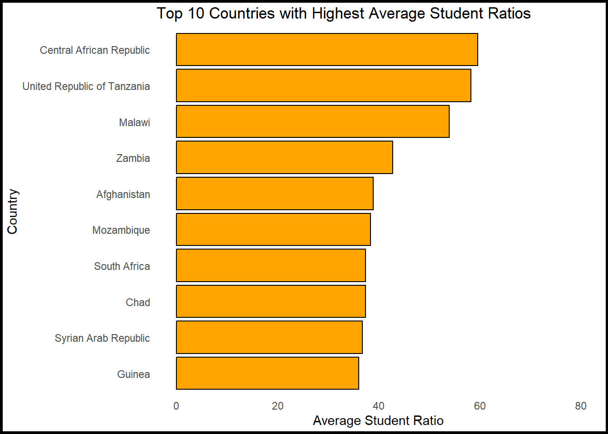
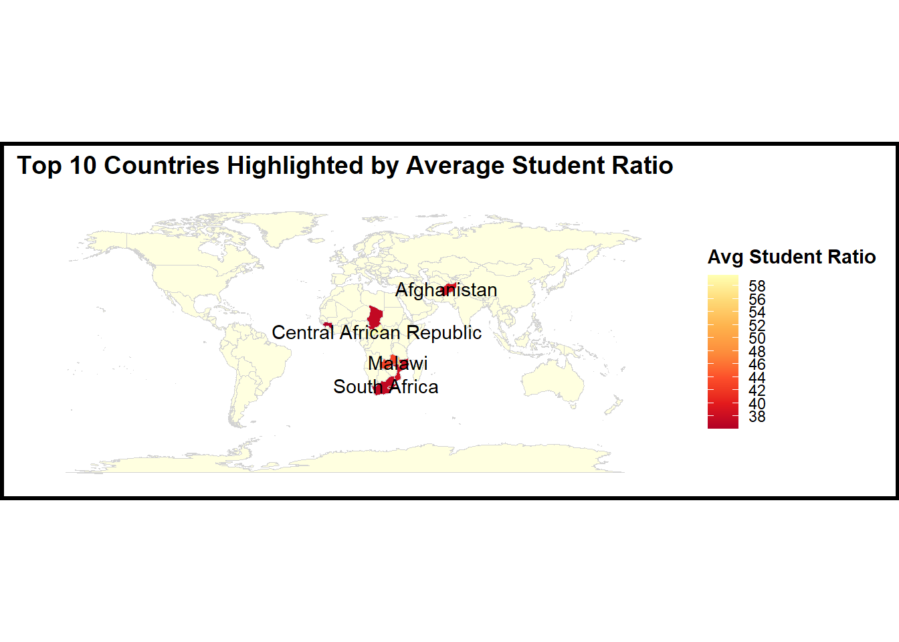
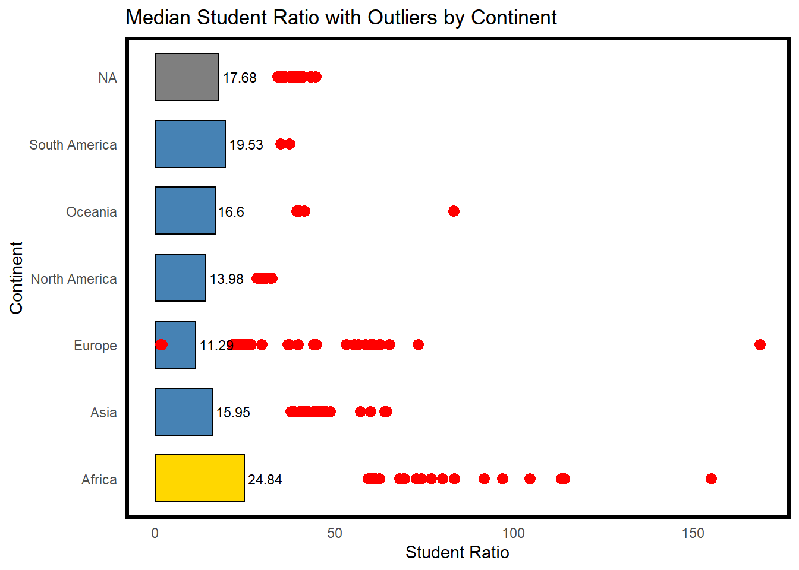
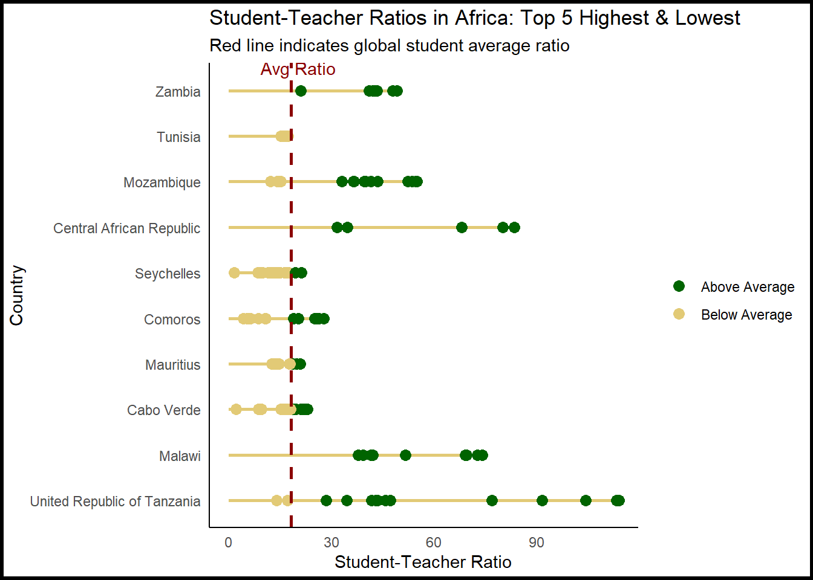

Introduction
In the vast landscape of global education, numbers play a significant role in painting a picture. However, there are specific numbers that stand out more than others, and one such number is the student-teacher ratio. It serves as a simple yet profound metric that gauges the balance between educators and learners. But why is this ratio so vital? Dive into this blog, where I unravel the significance of student ratios and how they vary across countries and educational indicators.
Also, I am trying to dig deeper in understanding about different nations, as they strive to provide quality education for their growing populations, a critical metric emerges from the backdrop - the student-teacher ratio. This ratio not only represents numerical data but reflects the pressure on educational systems and, more directly, on teachers.
About The Data
Data Source :
My exploration is rooted in a comprehensive dataset from github. This collection offers insights into the number of students per teacher in various educational institutions worldwide. I have merged this with continent’s data, which paints a global picture of student-teacher ratios, with a specific spotlight on Africa.
More Than Just Numbers :
While it’s easy to get lost in the vastness of data, it’s essential to understand that behind every student-teacher ratio lies a narrative of classrooms. A high ratio might indicate overcrowded classrooms, where individual attention becomes a luxury and teachers constantly grapple with balancing quality with quantity. Conversely, a lower ratio could suggest a more balanced educational environment.
The African Context :
Through this blog, we aim to:
- Chart out the evolution of student-teacher ratios in Africa over the years, providing a clear picture of the growing demands on educators.
- Offer visual interpretations, making data more approachable and emphasizing disparities within the continent.
- Highlight countries that are facing challenges, offering a comprehensive view of the African educational landscape.
- Probe deeper into potential reasons and implications of these ratios, going beyond just the numbers.
Embark on this journey with me as I navigate the educational corridors of Africa, seeking answers and understanding the intricate dance between numbers and narratives.
Analysis
| Variable | Description |
|---|---|
| edulit_ind | Education Literacy Indicator Code |
| indicator | Descriptive Indicator Name |
| country_code | ISO Country Code |
| country | Full Country Name |
| year | The year for the specific data entry |
| student_ratio | Average student-teacher ratio for that year and country |
| flag_codes | Additional codes for flags (if any) |
| flags | Descriptive Flag Names |
| Continent | The continent to which the country belongs |
To analyze the dataset, it is important to understand the type of data we are dealing with. To gain more information about the dataset,it is required to delve into its metadata – the descriptors that provide context about the data’s origin, structure, and inherent attributes as shown in Table 1. Metadata helps in framing our analysis and ensuring that we correctly interpret the values and patterns within the dataset. This dataset consists of 5189 observations and 9 variables.
The Struggle to Balance: Identifying the Overwhelmed Educators
When analyzing educational standards, one cannot simply overlook the student-teacher ratio. It’s a metric that resonates deeply with the quality of education provided and the experience in classrooms. A higher ratio translates to a greater number of students per teacher, potentially leading to strained resources and, unfortunately, a dilution in the quality of education.

From the Figure 1 above, it becomes evident that several countries are grappling with alarmingly high student-teacher ratios. This not only implies that classrooms in these nations might be more crowded but also suggests that teachers might be overwhelmed, trying to cater to the diverse needs of a larger student body. The orange bars represent the average student ratios for countries, and it’s distressing to see several nations clocking in at numbers much higher than global benchmarks, but is there a pattern here?
A Global Perspective: Africa in the Limelight
Visualizing data geographically has a unique way of making disparities and patterns come alive. When we chart out the student-teacher ratios on the world map, there’s a pronounced concentration of color intensity in certain regions - chiefly Africa, followed by parts of Asia, which hints along the same lines as the study done by Nesterova (2020).

The Figure 2 above serves as a beacon, highlighting the areas where interventions are most needed. There rises the question though, does this mean all African countries are struggling or just couple of them came up in this list?
Africa’s Struggle: A Median Perspective
Diving into data gives us insights, but there’s a unique clarity that emerges when we distil these numbers into simpler metrics, like the median. The median provides a ‘middle-ground’, filtering out extreme outliers, and showcasing a more standardized benchmark for comparison.

Upon exploration it reveals that Africa has a pronouncedly higher median student-teacher ratio compared to other continents. But what does this signify? Essentially, this metric reflects that at least half of the African countries have a student-teacher ratio higher than the continent’s median value.
The golden bar in the Figure 3 representing Africa unmistakably stands out, emphasizing the continent’s predicament. The red dots, representing outliers, further accentuate the disparity within continents, but it’s Africa’s column that draws immediate attention followed by Europe.
Africa’s Classroom Struggle: The Student-Teacher Ratio Conundrum
In the pursuit of quality education, the balance between students and teachers is critical. Despite its vast cultural heritage, Africa grapples with this balance, as evidenced by its skewed student-teacher ratios.

The visual in the Figure 4 above paints a compelling picture of the student-teacher ratios across African nations. Those with the most significant challenges are marked in stark green, indicating settings where educators are spread thin, potentially diluting the quality of education. On the flip side, the mustard yellow dots signify countries with slightly better ratios - but there’s a catch. Even these relatively “better” nations fall short of the global ideal student-teacher ratio, depicted by the dashed red line.
Worryingly, no African country, even those with somewhat balanced ratios within the continental context, manages to dip below this universal benchmark. This revelation underscores the endemic nature of this educational challenge within Africa.
Conclusion
Africa’s educational landscape, rich in potential, faces a pressing concern: the imbalance in student-teacher ratios. A high ratio can hint at classrooms bursting at the seams, potentially compromising the quality of instruction and learning based on research by Mohamed (2020) . While some countries within the continent show promise, the overarching trend suggests an urgent need for introspection and action. Addressing this imbalance is not just about improving numbers but ensuring that each student gets the attention and resources they deserve. The journey ahead is challenging, but with concerted efforts, a balanced educational environment is within reach.